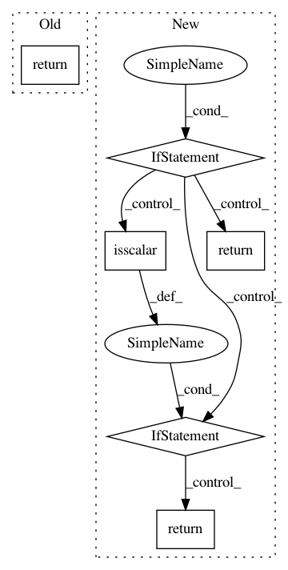

b5264000f20db429a3bd371ec66178c9fb49e5ce,Orange/distance/distance.py,SpearmanModel,compute_correlation,#SpearmanModel#Any#Any#,434
Before Change
if isinstance(rho, np.float):
return np.array([[rho]])
slc = x1.shape[1 - self.axis]
return rho[:slc, slc:]
class CorrelationDistance(Distance):
supports_missing = False
After Change
def compute_correlation(self, x1, x2):
n1 = x1.shape[1 - self.axis]
n2 = x2.shape[1 - self.axis] if x2 is not None else 0
if x2 is None:
if n1 == 2:
// Special case to properly fill degenerate self correlations
// (nan, inf on the diagonals)
rho = stats.spearmanr(x1, x1, axis=self.axis)[0]
assert rho.shape == (4, 4)
rho = rho[:2, :2].copy()
else:
// scalar if n1 == 1
rho = stats.spearmanr(x1, axis=self.axis)[0]
return np.atleast_2d(rho)
else:
// this computes too much (most of it is thrown away)
rho = stats.spearmanr(x1, x2, axis=self.axis)[0]
if np.isscalar(rho):
// scalar if n1 + n2 <= 2
assert n1 + n2 <= 2
return np.atleast_2d(rho)
else:
assert rho.shape == (n1 + n2, n1 + n2)
return rho[:n1, n1:].copy()
class CorrelationDistance(Distance):
supports_missing = False
In pattern: SUPERPATTERN
Frequency: 3
Non-data size: 6
Instances
Project Name: biolab/orange3
Commit Name: b5264000f20db429a3bd371ec66178c9fb49e5ce
Time: 2018-01-16
Author: ales.erjavec@fri.uni-lj.si
File Name: Orange/distance/distance.py
Class Name: SpearmanModel
Method Name: compute_correlation
Project Name: biolab/orange3
Commit Name: b5264000f20db429a3bd371ec66178c9fb49e5ce
Time: 2018-01-16
Author: ales.erjavec@fri.uni-lj.si
File Name: Orange/distance/distance.py
Class Name: PearsonModel
Method Name: compute_correlation
Project Name: scipy/scipy
Commit Name: 76f82128990d4cf7bb461f4523c40a9f33b8d518
Time: 2014-12-26
Author: larsmans@gmail.com
File Name: scipy/sparse/linalg/interface.py
Class Name: LinearOperator
Method Name: dot